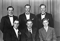

Harry Amos Forsell
Docent i Statskunskap, Länsråd mm. Blev 82 år.
| Född: | 1928-07-31 Skellefteå sfs, Skellefteå sn. [1] |
|---|
| Död: | 2010-11-08 Ön 6:11, Tegs fs, Umeå kn. |
|---|
| Vigsel: | omkring 1954. |
|---|
| Levde: | 1981 Ön 6:11, Tegs fs, Umeå kn. [1] |
|---|
| Levde: | 2006 Skiljevägen 12, Umeå. [2] |
|---|
| Barn: |
|---|
| Pär Fredrik Kristian Forsell (1955 - ) |
| Eva Ingrid Susanna Forsell Nordin (1960 - ) |
Noteringar
Harry Forsell
Ett rikt liv är slut. En stor personlighet har lämnat oss. Harry Forsell är död.
Harry såg ljuset för första gången för 82 år sedan. Yngst av 10 syskon växte han upp i den lilla byn Holmfors i det inre av Skellefteå kommun. Det var i en tid då det var självklart att barnen skulle delta i arbetet på gården. Detta gällde också för Harry.
Efter sex år i skolan och en termin i fortsättningskurs var det dags för Harry att söka mera reguljära arbeten. Redan som 13 åring busskonduktör på den gengasdrivna bussen till Skellefteå med mycket godshantering. Sen som pumpskötare vid Selsforsens kraftverksbygge. På betryggande avstånd från yrkesinspektionen..
Men vid 18 års ålder sökte han sig till Mellansels folkhögskola. Den gjorde honom meriterad för en plats på folkskoleseminariet i Umeå.
Tiden där blev i många avseenden utvecklande för Harry. Tillsammans med bl a Sture Meijer och Lars Bäckman la han en god grund för sin målerikonst. Där deltog han också i en teatergrupp. I en vurpa med cykeln mötte han Marta. Det blev inledningen till ett förhållande som blev livslångt. Marta blev ett med Harry. Tillsammans fick de barnen Per och Susanna.
Sin folkskollärarbana inledde Harry i Norsjö. Där började också hans politiska karriär. Han blev ledamot i kommunfullmäktige och i landstinget. Men 1961 växlade Harry spår. Han lämnade Norsjö och politiken för en tjänst som rektor i Fjällsjö kommun.
Det dröjde emellertid bara några få år innan han åter var inne på den politiska vädjobanan. Politiken är som ett gift, sa Harry. Han kunde inte avstå från samhällsengagemanget.
Även fortsatta studier lockade honom. 1965 var han tillbaka i Västerbotten för utbildning till statsvetare vid det unga universitetet i Umeå. Under ledning av professor Per-Erik Back och i samarbete med bland andra Dan Brännström och Gunnel Gustafsson arbetade Harry med Strukturomvandlingsprojektet. Harry disputerade på sin doktorsavhandling 1972.
Samtidigt deltog Harry mycket aktivt i olika politiska uppdrag för socialdemokraterna. När posten som landstingsråd år 1972 plötsligt blev vakant antog Harry partiets erbjudande om att inta den rollen.
Men efter bara tre år ville Harry växla spår igen. Han sökte och fick uppdraget som länsråd vid länsstyrelsen i Västerbotten. Den uppgiften hade han fram till sin pensionering 1992.
Under sina år som politiker och sedan som ämbetsman byggde han upp ett mycket starkt förtroende. Han var mycket väl rustad för sina uppgifter. Han hade ingående kunskap om folkliv, kultur, näringsliv och traditioner i länet. Harry ägde en eminent förmåga att göra invecklade sammanhang begripliga. Hans handlingskraft parade med fingertoppskänsla för vad som var möjlig gjorde honom till en god problemlösare och medlare. Djupt rotad i de miljöer där han arbetade hade han förståelse för såväl små som stora frågor i samhällsbygget. Med sin alltid dråpliga humor, kryddad med mustiga dialektala inslag, kunde han fånga och roa också under de mest allvarstyngda sammanträdena.
Många är de insatser i länets utveckling som kommit till stånd genom Harrys ingripanden. Harry var en mästare i att bryta ned byråkratiska hinder. Som exempel kan nämnas när en centralbyråkrati i Stockholm ville säga nej till en planerad stugby i Tärnaby med hänvisning till att marken lutade för mycket. Då röt Harry: Det ska du skita i. Om marken inte hade lutat i Tärna då hade Sverige inte haft någon världsmästare vid namn Ingemar Stenmark. Bygget kom till stånd.
Också hans fritid var rik på innehåll. Jakten var hans passion. Från jakten på ekorrar och skogsfågel under ungdomsåren till storvilt i mogen ålder. Harry fällde 76 älgar och ägde under sina levnadsår sammanlagt 24 hundar.
Naturintresset tog också sitt uttryck i flitig bärplockning och fiske. Stugan i Ammarnäs var för honom och hans familj en kär tillgång för avkoppling från ett tidvis hektiskt arbetsliv.
Också den konstnärliga verksamheten må nämnas. Åtskilliga verk har lämnat hans staffli. De har mött en uppskattande publik. I familjens hus på Ön vittnar hans takmålningar på ett fascinerande sätt om de naturmiljöer Harry satte allra störst värde på.
Harry Forsell har lämnat djupa avtryck genom sin mångsidiga gärning. Jag är övertygad om att alla som mött honom kan instämma i detta.
Georg Andersson
Personhistoria
| Årtal | Ålder | Händelse |
|---|
| 1928 |
|
Födelse 1928-07-31 Skellefteå sfs, Skellefteå sn [1] |
| 1930 |
1 år |
Makan Marta Viola Johansson föds 1930-05-18 Höggård, Tavelsjö fs, Umeå sn [3] |
| 1954? |
|
Vigsel Marta Viola Johansson omkring 1954 |
| 1955 |
26 år |
Sonen Pär Fredrik Kristian Forsell föds 1955-05-02 Norsjö, Norsjö fs, Norsjö sn [1] |
| 1960 |
32 år |
Dottern Eva Ingrid Susanna Forsell Nordin föds 1960-09-09 Norsjö, Norsjö fs, Norsjö kn [1] |
| 1964 |
36 år |
Brodern Ragnar Olaus Forsell dör 1964-10-29 Embla 4, Umeå sfs, Umeå stad [4] |
| 1965 |
36 år |
Fadern Johan Algot Forsell dör 1965-05-02 Holmfors 2, Skellefteå kn [5] |
| 1979 |
50 år |
Modern Sanna Adelia (Adéle) Furberg dör 1979-05-14 Brännans ålderdomshem, Skellefteå lfs, Skellefteå kn [6] |
| 1981 |
|
Levde Marta Viola Johansson 1981 Ön 6:11, Tegs fs, Umeå kn [1] |
| 1983 |
54 år |
Brodern Ivar Eugén Forsell dör 1983-06-11 Holmfors 6:1, Skellefteå kn [7] |
| 1986 |
58 år |
Brodern Verkmästare vid Bolidens Gruvaktiebolag Birger Algot Forsell dör 1986-10-08 Bjurliden 1:522, Torget 2, Boliden, Bolidens fs, Skellefteå kn [8] |
| 1991 |
63 år |
Systern Sanna Ingrid Alida Forsell dör 1991-08-31 Anderstorg 10 /401, Skellefteå, Skellefteå lfs, Skellefteå kn [9] |
| 1996 |
67 år |
Systern Magda Kerstin Andréa Forsell dör 1996-01-04 Vedby fs, Klippan, Kristianstads län [10] |
| 2005 |
76 år |
Brodern Daniel Lennart Forsell dör 2005-03-04 Fältjägarvägen 41 A, Skellefteå, Skellefteå lfs, Skellefteå kn [11] |
| 2006 |
|
Levde Marta Viola Johansson 2006 Skiljevägen 12, Umeå [2] |
| 2010 |
82 år |
Död 2010-11-08 Ön 6:11, Tegs fs, Umeå kn |
Källor
| [1] | Mtl Västerbottens län 1981 |
| |
| | |
| [2] | https://www.ratsit.se/sok/avancerat/person |
| |
| | |
| [3] | SCB Födda AC Tavelsjö 19/1930, Mtl Västerbottens län 1981 |
| |
| | |
| [4] | AL / DOR 64 / UTD 61-67, NV - Dödsannonsregistrering 1964-11-02 |
| |
| | |
| [5] | DOR 65, UTD 61-67, NV Dödsannonsering 1965-05-05 |
| |
| | |
| [6] | SPAR 80, RTB 79 |
| |
| | |
| [7] | SPAR 90, RTB 83 |
| |
| | |
| [8] | SPAR 90, RTB 86 |
| |
| | |
| [9] | SPAR 92, RTB 91 |
| |
| | |
| [10] | SPAR 96, RTB 96, SPAR 92 |
| |
| | |
| [11] | man91 / RFV 06 |
| |
|
 |
1945. Familjen Adéle och Algot Forsell.
Bakre raden fr.v.: Ivar, Birger, Ragnar,Torsten, Daniel, Harry
Främre raden fr.v.: Gunborg. Adele, Margit, Sanna, Algot, Magda.
|
| |
|  |
1945. Bröderna Forsell.
Bakre fr. v.: Birger, Ivar, Torsten
Främre fr. v.: Daniel, Ragnar, Harry
|
|

{kind=link}